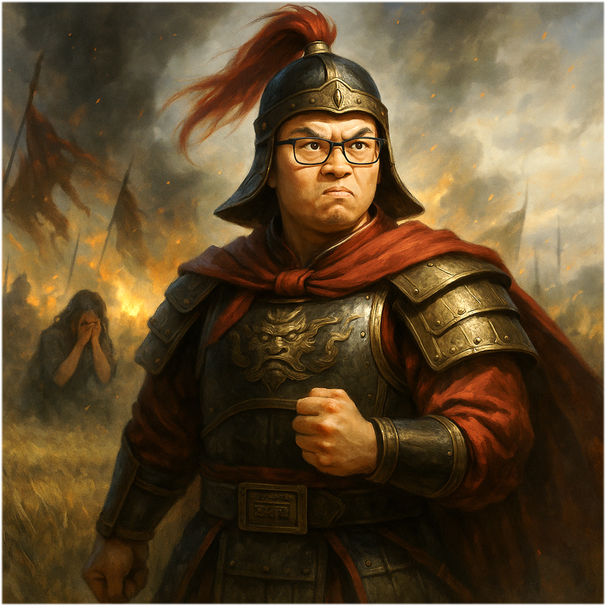
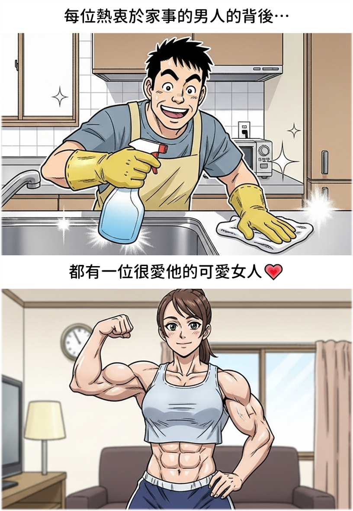

Illustration

Gender
❓ - 這年頭真的很複雜（Meeting 開始前宣告你的性別）
Goal
親手讓一位異性輟學
Ability
# 啪啪兩巴掌 -
一位異性使用手牌時，你可以使用兩張黑色手牌給她兩巴掌，預判她說的鬼話，看她還老不老實。
# 罵到哭 -
使用書報討論檢閱面前一位異性的論文。若為垃圾論文，可以丟回到她面前。到底在寫什麼東西啊！？
## 肥水不落外人田 -
一位異性發表自己傳出的論文。明明就想肥水不落外人田，還死不承認，直接送她一篇垃圾論文。
Trivia
過去的世界曾經有過性別的不平等，
但如今，早已邁入一個兩性憑拳的時代。
別再以為肌肉就是男人的專利，現在有不少女性健身狂熱者，練得又壯又狠，
老實說，拳頭大小還真的不一定輸給男性，不少男性也開始勤作家事…

誰拳硬，誰發話。
性別不再是重點，重點是 — 你能不能一拳展現說服力！
「啪啪兩巴掌」 — 故事就發生在某個平凡的午後
珊珊姊私訊憑拳大將軍，希望大將軍有在實驗室的話可以幫她送公文
為什麼公文不自己送要別人送呢？
原來是拉肚子不舒服
但是即便如此咱們大將軍可不慣著她，公文要送自己送！
好笑的是 —
到了晚上 19:00，珊珊姊被目擊大搖大擺地走出師大校園，手上還悠哉提著泳具包。
「原來拉肚子不能跑公文，但能游泳？」
大將軍聽聞此事，摩拳擦掌準備明日好好的給她「一定是兩巴掌的啦！」
結果隔天大將軍一追問，珊珊姊竟回他
「我昨天有去啊，下午去學校旁診所看醫生」
這時大將軍心想：
「好妳樣的，我們晚上 19:00 看到你，你跟我扯下午去看醫生」
大將軍舉起即將戳破謊言的一擊重拳
想不到！卻被珊珊姊反手的神扯邏輯蠻橫擋下？
「我下午去的啊… 19 點是下午啊…」
大將軍竟一時無言以對…
這下大將軍手都抬起來了，卻硬是搧不下去，這巴掌硬生生卡在空中，說不出的憋屈。
這一戰 — 神扯邏輯 vs. 憑拳正義
大將軍，輸爛！
「罵到哭」那是一天下午
珊珊姊坐立在電腦前，苦思冥想，思緒繞了好幾圈，終於忍不住向大將軍發問。
原來，她是參考了陳大帥帥的程式碼，但因為帥帥使用的是高階程式語言，可以直接呼叫開發者寫好、打包完成的函式。相較之下，珊珊姊手上卻沒有任何實際可參考的程式碼，只剩一個成品在眼前。
這樣人家怎麼寫成晶片呢？陳大帥帥 Bad👎🏻
大將軍聽完她的煩惱，一臉問號，心生困惑：
「這不是上網爬一下，或是問個 AI，就可以知道怎麼做了嗎？」
他試著耐心開導，但不管大將軍怎麼解釋，珊珊姊依然困在她的死胡同裡，始終繞不出那道心結。
直到 — 大將軍終於忍無可忍，無需再忍！
「怎麼可能寫不出來，你在說什麼東西？？」
大將軍不想再聽任何解釋，直接用上從色彩學大師學到的「終結技」，疑問 + 狂怒的雙重 Buff！
「妳到底在說什麼啊！？！」
憑拳大將軍怒噴過後，神清氣爽，颯爽離去～
隨後，他便與湖口砲兵連連長、心碎小狗，一起歡聲笑語，愉快地討論起新手機的使用心得，好像剛剛那場戰役從未發生。
全然不知，在某處角落，有人默默含淚，為剛才的震撼沉默不語…
這一戰 — 大將軍，勝利！
「肥水不落外人田」這是大將軍與珊珊姊的一場精彩博弈
故事要從幾天前說起，實驗室組團公費出遊，細節不贅述，重點來了：
當時小南瓜負責租車載大家去看夜景，原先聲稱「打助攻」的珊珊姊，竟然突然跳出來，搶坐副駕駛寶座？！
再結合稍早她那場以「教我寫 code」之名，行「來我房間」之實，還久久不肯放人，就很玄！
旅行結束幾日後，大將軍仍耿耿於懷，決定展開「賽後檢討」：
「你當時為何把小南瓜叫去房間這麼久」
珊珊姊面不改色：「我就想讓他有機會跟鮭魚獨處啊」（註：鮭魚是小南瓜當時的目標對象，大家都知道）
大將軍眉頭一皺：「可是明明是你霸佔小南瓜，要他教你寫 code」
珊珊姊剛要開口辯駁，大將軍搶先發動語言連擊，不給任何機會：
「我都知道了，妳不必多說 — 肥水不落外人田嘛！」
此言一出，珊珊姊有話說不出，表情逐漸凝重…
一旁的黃老二倒是樂著吃瓜，嘻嘻哈哈地看戲，還時不時附和大將軍幾句助陣。
大將軍乘勝追擊：「那當時租車的時候，妳為什麼搶著要坐副駕？」
不管珊珊姊如何辯駁，大將軍仍是一句作結
「我都懂啦，肥水不落外人田嘛！」
突然，空氣突然凝結成冰。
奇怪的是 — 黃老二竟已悄悄躲進小房間，面露奸笑，似乎預感到好戲即將登場…
果然，下一秒，珊珊姊語氣一沉，緩緩開口：
「大將軍…，我要很嚴肅地跟你說，我沒有喜歡小南瓜」
「我不知道為什麼你要一直覺得我有喜歡他…」
珊珊姊語氣冷靜，字字凜然。一瞬間，大將軍肅然起敬、嘴巴閉閉。
隨後，珊珊姊背起包包，憤而離去，只留下大將軍站在原地 — 面帶委屈
那麼，大將軍到底在委屈什麼呢？
原來，早在一開始，眾人便有珊珊姊對小南瓜的「友情以上」有所盤算。
只有大將軍力排眾議，堅決不信：「不可能！要是真的有，我從 12 樓跳下去！」
沒想到現在，帶頭反對的，竟變成了最會帶風向的滋事者 —
一場自以為的明辨是非，最後成了賠了夫人又折兵的喜劇。
#Badass #Master #Variant
Relationship